Project 5
Fun With Diffusion Models!
Yuan-Hao Huang
yhhuang20@berkeley.edu
Overview
This project plays around with diffusion models.
In part A, we use diffusion models to obtain interesting results.
In part B, we implement our own diffusion model using U-Net.
Part A: The Power of Diffusion Models!
0. Setup
The smaller and larger images are 64x64, 256x256, respectively.
num_inference_steps = 5:

num_inference_steps = 10:

num_inference_steps = 20:

Clearly, the images generated with larger num_inference_steps are clearer and have more details.
All images correspond accurately to the prompt.
The random seed used here is 180.
1.1 Implementing the Forward Process
Test image at different noise levels:
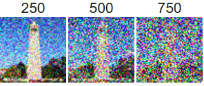
1.2 Classical Denoising
Gaussian blur filtering :
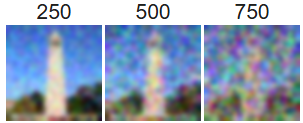
1.3 One-Step Denoising
Original image:

Noisy image:
Estimate of the original image using one-step denoise:
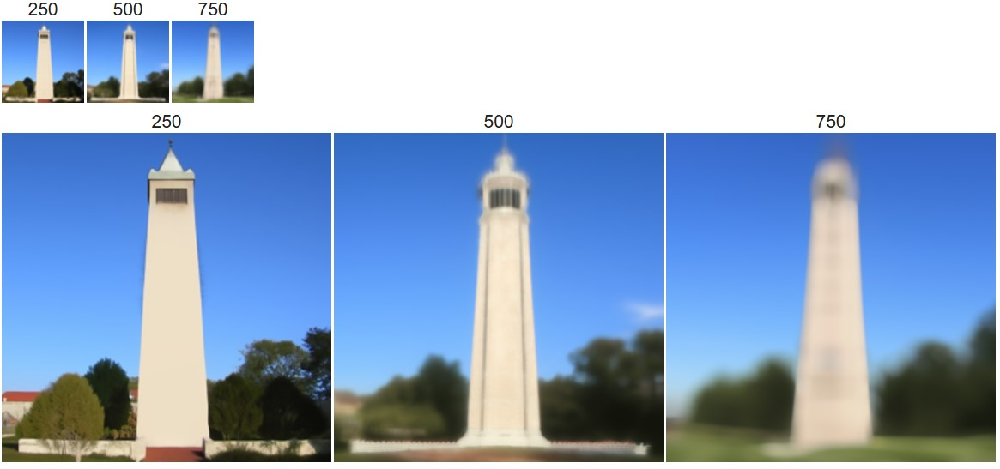
1.4 Iterative Denoising
Intermediate noisy image during denoising:

Denoising results (64x64, 256x256):

1.5 Diffusion Model Sampling
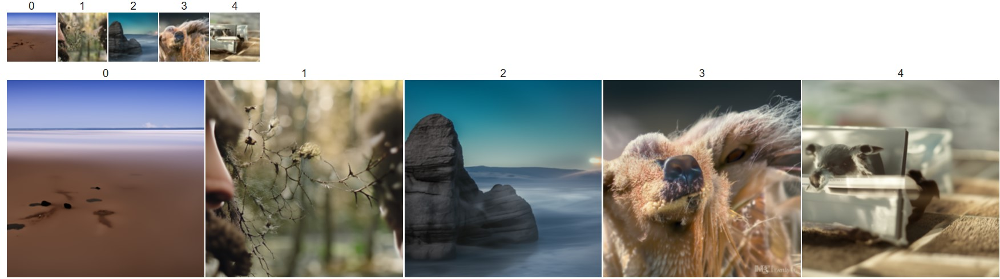
1.6 Classifier-Free Guidance (CFG)
gamma = 7:

Observation: The images generated is much more colorful than the previous algorithm.
It is also fun playing with the scale:
gamma = -70:

gamma = -15:

gamma = -7:

gamma = 0:

gamma = 7:
gamma = 15:

gamma = 70:

1.7 Image-to-image Translation
Original image:

SDEdit:

Original image:
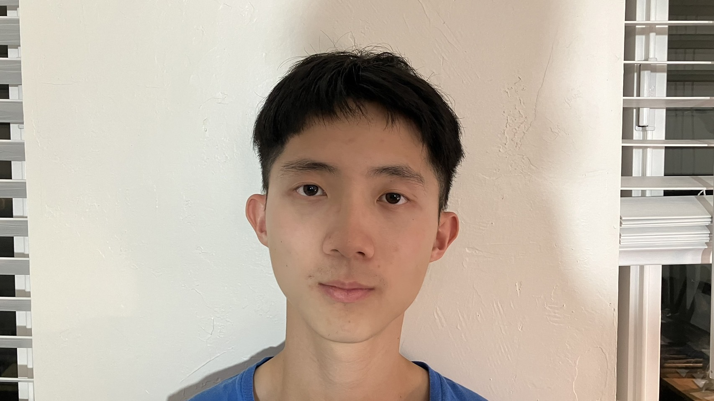
SDEdit:

Original image:
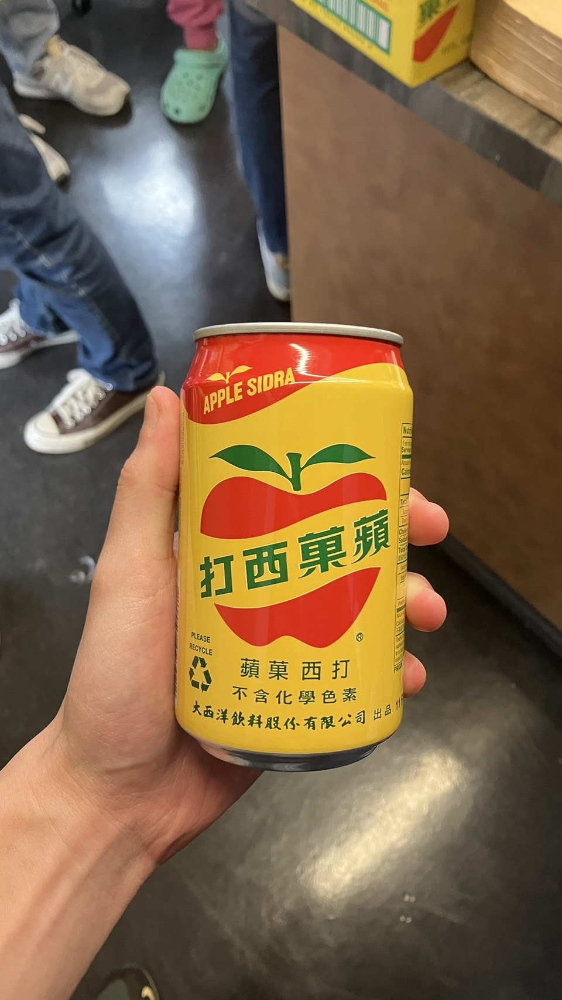
SDEdit:

1.7.1 Editing Hand-Drawn and Web Images
(Web) Original image:

SDEdit:

(Web) Original image:
SDEdit:

(Hand-Drawn) Original image:
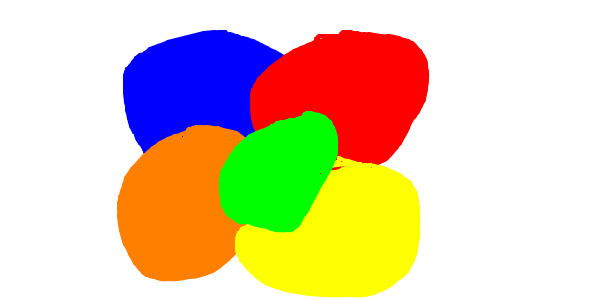
SDEdit:

(Hand-Drawn) Original image:
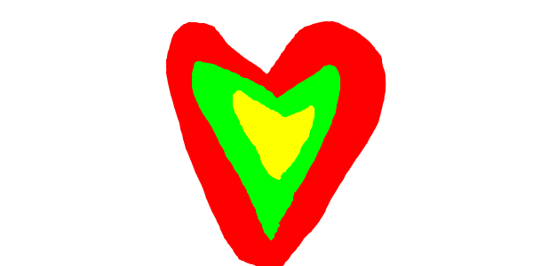
SDEdit:

(Hand-Drawn) Original image:
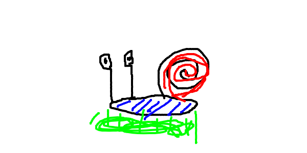
SDEdit:

1.7.2 Inpainting
Original image:

Inpainted:

Original image:
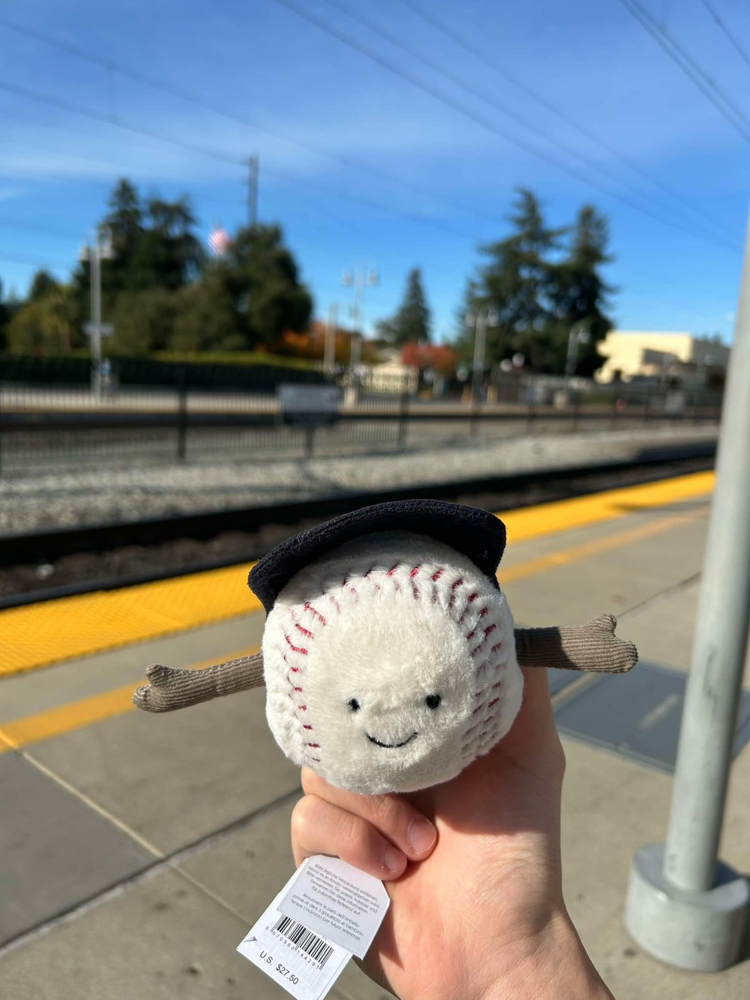
Mask:

Inpainted:

Original image:
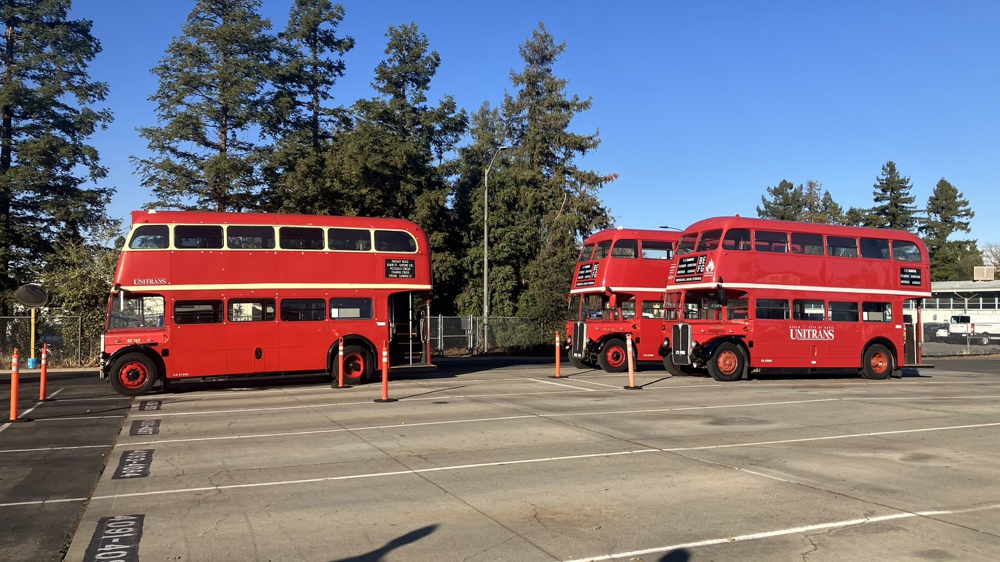
Mask:

Inpainted:

1.7.3 Text-Conditional Image-to-image Translation
Original image:
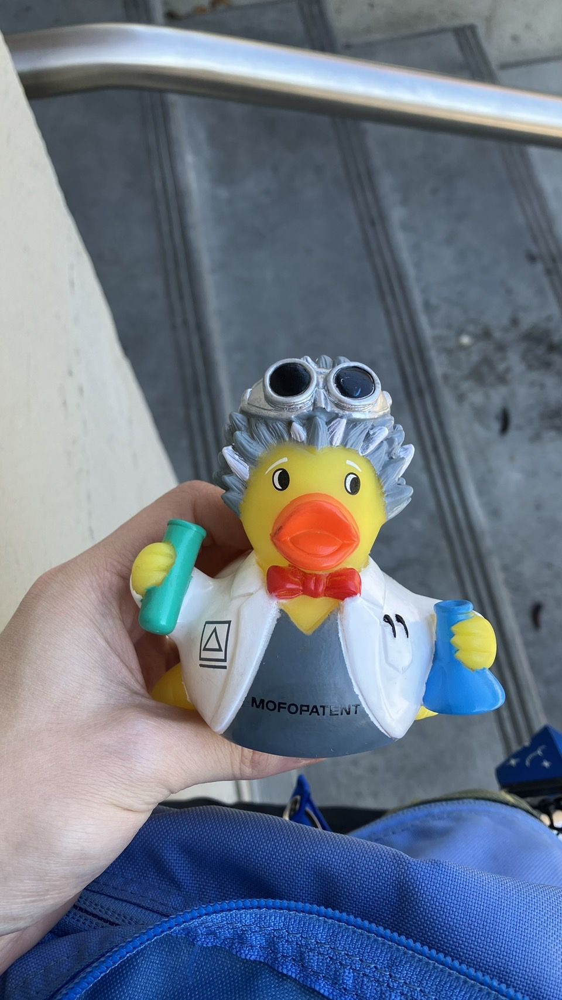
Prompt: a photo of a dog

Original image:
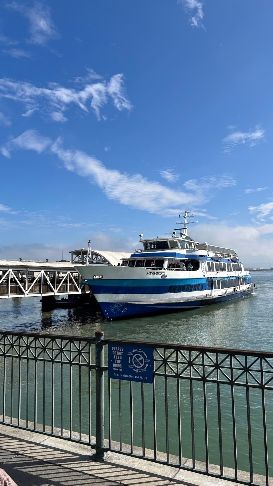
Prompt: a man wearing a hat

1.8 Visual Anagrams
an oil painting of an old man

an oil painting of people around a campfire

a photo of the amalfi cost

a photo of a dog

an oil painting of a snowy mountain village

a pencil

1.9 Hybrid Images
a lithograph of a skull + a lithograph of waterfalls

a rocket ship + a photo of a dog

a photo of a dog + a lithograph of a skull

Part B: Diffusion Models from Scratch!
Part 1: Training a Single-Step Denoising UNet
A visualization of the noising process using sigma = [0.0, 0.2, 0.4, 0.6, 0.8, 1.0]:
Training loss curve:
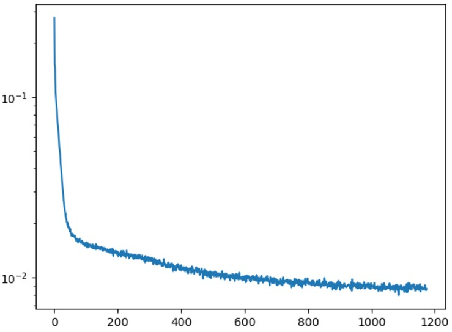
Sample results on the test set after the 1st epoch [input | noisy | output]:
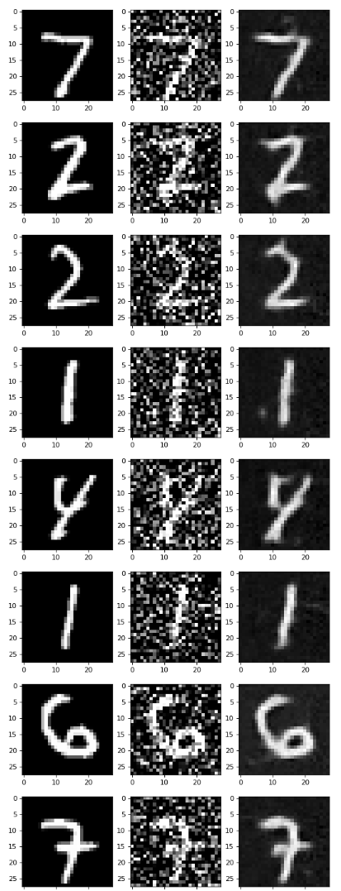
Sample results on the test set after the 5th epoch [input | noisy | output]:
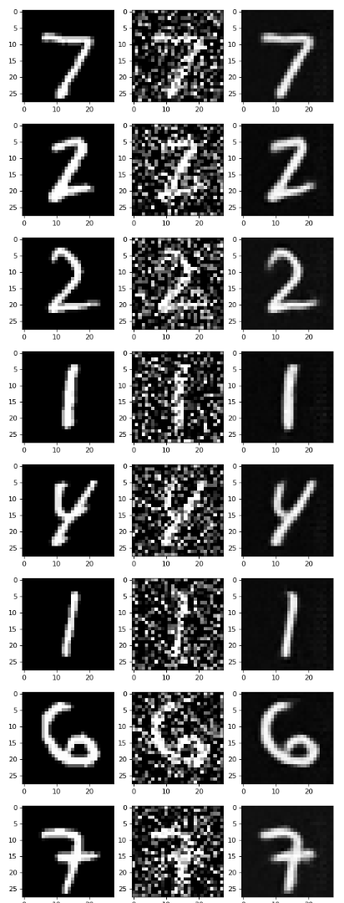
Sample results on the test set with out-of-distribution noise levels, sigma = [0.0, 0.2, 0.4, 0.5, 0.6, 0.8, 1.0], [noisy | output]:
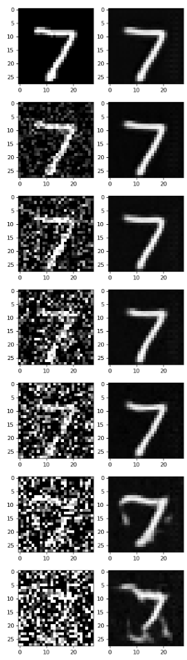
Part 2: Training a Diffusion Model
2.1 Adding Time Conditioning to UNet
Training loss curve:
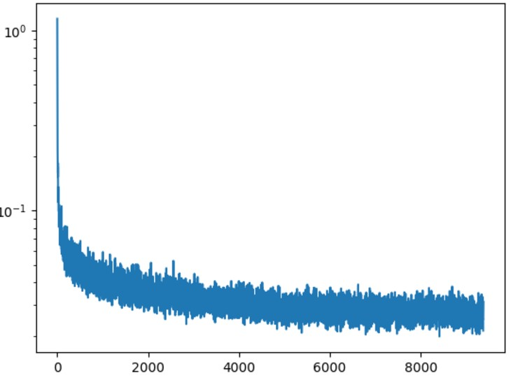
Sampling results for the time-conditioned UNet after 5 epochs:
Sampling results for the time-conditioned UNet after 20 epochs:
2.4 Adding Class-Conditioning to UNet
Training loss curve:
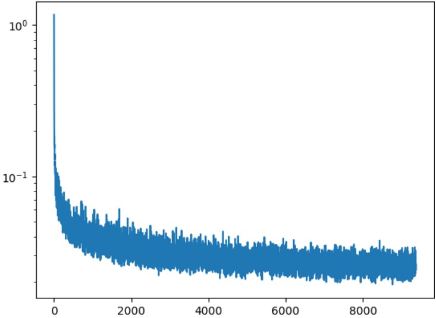
Sampling results for the class-conditioned UNet after 5 epochs:
Sampling results for the class-conditioned UNet after 20 epochs: